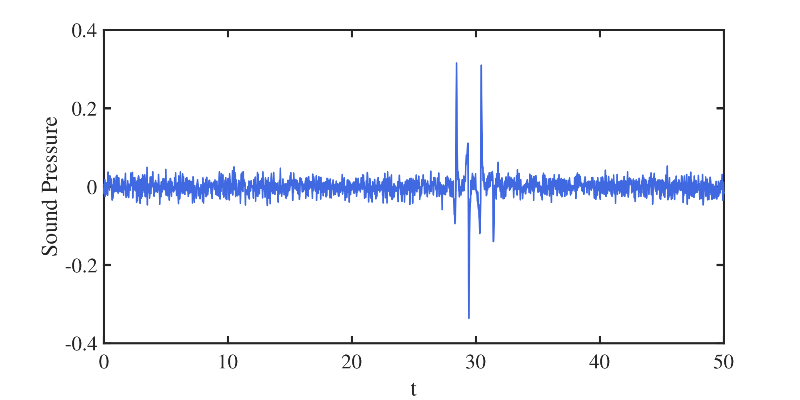
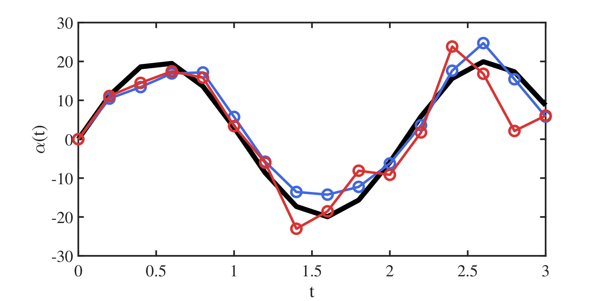

PROJECT
Aeroacoustic Inversion of Rotor-Gust Interaction Noise
Journal Paper : "Aeroacoustic Inversion of Rotor-Gust Interaction Noise", Lafargue & Verma, JTCA (August 2026)
 alt="Gust generated by disturbance generator interacting with downstream rotor">
alt="Gust generated by disturbance generator interacting with downstream rotor">
Project Overview
Developed an analytical framework to identify the source of rotor noise caused by an unsteady gust. The gust is modeled as the vortex sheet shed by a pitching airfoil upstream of the rotor. The motion is reconstructed from far-field pressure measurements alone. The forward model uses the Wagner function to capture the time-varying circulation from a step change in the upstream airfoil's angle of attack, combined with a blade-vortex interaction model to predict the resulting fluctuating loading and noise on the rotor blades; convolving this step response gives the loading for any arbitrary upstream motion. Discretizing that convolution yields an inversion: given a measured far-field pressure signal, the method reconstructs the pitching motion that produced it. Tested against ramp, sinusoidal, and more complex pitching profiles, including with added Gaussian noise on the pressure signal, the approach reliably recovers the gust generator's motion even under non-ideal, noisy conditions, offering a non-intrusive way to diagnose gust–blade interaction dynamics for rotor noise mitigation.

